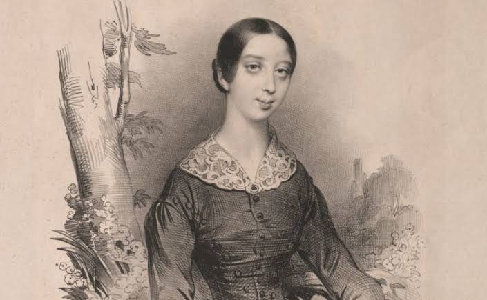

Ivan Turgenev (1818-1881)
Important things about him
- Realist writer: metonymy (hands), social type, location characterizes person (estate vs. road), omniscient/objective narrator, novel as a public debate forum, here and now
- Social types: raznochinets (1860s new man) vs. 1840s liberal gentry, superfluous man: Diary of a Superfluous Man
- Discusses the ideas of positivism and determinism through his characters
- Gender: strong female characters (Terrible Perfection by Barbara Heldt, 1979)
